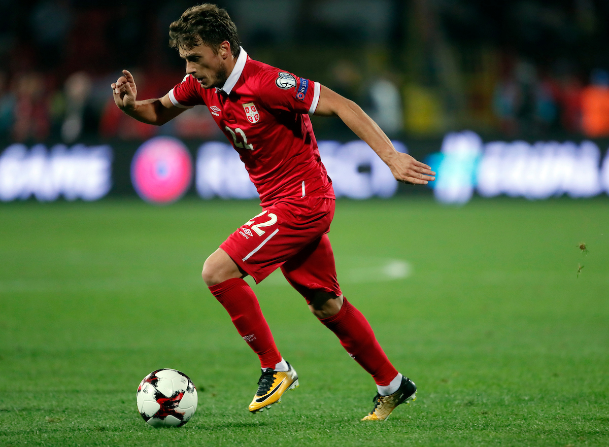

NOVI PAZAR
Možete nas naći na:


U Novom Pazaru postoje odlični uslovi za sve sportove i rekreaciju i za sticanje i
održavanje kondicije i očuvanje zdravlja.
Novi Pazar ima fantastičan sportsko rekreativni centar koji je izuzetno prostran i nalazi se u strogom
centru grada što ga čini posebnim ne samo u zemlji već i šire.
Na rekreacionom centru se nalaze skoro svi sportski tereni,
teren za mali fudbal, rukomet, odbojku, bazen, rekreativna staza duzine 904 m.,
adekvatno opremljeni prostor za najmlađe.
Novopazarska hala sportova je najveći sportsko rekreativni objekat zatvorenog tipa,
kapaciteta 2000 mesta. U njoj mnogi sportovi bivaju zastupljeni, kao što su: košarka, mali fudal,
odbojka, borilačke veštine ,fitness itd.
Hala sportova poseduje malu (pomoćnu) salu, media centar, bife restoran, salu za borilačke sportove i
teretanu.
2012. je otvorena nova Hala “Pendik” kapaciteta 2000, gde se redovno održavaju utakmice odbojkaške
superlige.
Pored sportskih manifestacija, redovno se održavaju međunarodni sajmovi.
Sandžačke igre i MOSI su najveće sportske manifestacije u našoj okolini.
Nastale su kao rezultat društvenih zbivanja i početkom pedesetih godina.
One su okupile sandžačke sportiste i pokazale kako se širi zajedništvo, međusobno uvažavanje,
razumevanje i tolerancija.
Sandžačke igre zbog svoje popularnosti kao multietnička i multinacionalna manifestacija teritorijalno se
šire pa se iz godine u godinu uvrstaju u red najmasovnijih igara na ovim prostorima.
Svake godine veliki broj učesnika svih uzrasta učestvuje na Ramazanskom turniru u malom fudbalu, koji
traje tokom celog meseca.
U Novom Pazaru se nalazi veliki broj sportsko-rekreativnih centara, i to:
- Gradski bazen
- Fudbalski stadion "Šutenovac"
- Fudbalski stadion "Novopazarska banja"
- Sportska hala "Novi Pazar"
- Hala u zgradi visokog školstva
- Ski centar "Golija"
- Sportsko-rekreativni centar "Jezero–Ribariće"
- Sportska hala "Pendik"
Sportsko sajamska ustanova "Pendik" živi svoju četvrtu uspešnu godinu. Njena izgradnja i stavljanje na uslugu sportistima grada mladih značila je novu energiju i nove mogućnosti razvoja sporta u Novom Pazaru. U njoj treniraju škole fudbala, odbojke, i košarke održavaju se velike sportske manifestacije od Tradicionalnog Ramazanskog turnira u malom fudbalu do bokserskih profesionalnih i MMA spektakala. Medjunarodni turniri u rukometu,karateu, demonstracija borilačke veštine aikidoa,turnir u malom fudbalu “Ismail Majo Bandžović”,univerzitetska takmičenja, državna prvenstva u boksu, kik boksu i karateu, školske lige u nekoliko sportova kojima je organizator Sportski savez grada, Igre bez granica, školske olimpijade itd.
pendik.rs
- Gradski stadion
Gradski stadion u Novom Pazaru je stadion sa više namena u Novom Pazaru. Trenutno se koristi najviše za fudbalske mečeve i on je domaći teren FK Novi Pazar. Kapacitet stadiona je preko 12.000 gledalaca, od toga je samo severna tribina bez sedećih mesta. Stadion se trenutno sastoji od istočne i zapadne tribine, a od aprila 2012. i severne tribine. Pred početak sezone 2014/15. počelo je postavljanje reflektorskog osvetljenja, dok je prva utakmica pod reflektorima odigrana 29. septembra 2014. kada je Novi Pazar ugostio Jagodinu (3:0).
FK Novi Pazar
- Atletski stadion
Atletski stadion u Novom Pazaru je najsavremeniji atletski stadion u zemlji, koji je sagrađen 2017. godine. Nesumnjivo će koristiti mladim ljudima iz ovog grada, kao i ljudima iz regiona. Svečanom otvaranju ovog stadiona su prisustvovali Ministar omladine i sporta Vanja Udovičić, evropski šampion u bacanju kugle Asmir Kolašinac, atletičarka Amela Terzić, kao i ostali uspešni atletičari iz regiona.
Naš grad je ponosan ponajboljim reprezentativcem Srbije, Ademom Ljajićem.
Adem Ljajić je kao dečak posle škole provodio vreme na ulici družeći se sa loptom, neovisno o kojem
godišnjem dobu je reč.
Uporan je to dečak bio, verovao je u svoje snove, koji kreću prelaskom iz FK Jošanica u Partizan.
U Partizanu se isticao kao jedan od većih talenata koji nije promakao skautima velikog Manchester
United-a.
Otišao je na probu u Manchester-u gde su sitni detalji odlučili da ne zadovolji očekivanja samih
trenera.
Nakon toga, našeg Adema nije pokolebao "neuspeh" u Manchester-u, pa je napornim radom zaslužio ugovor
fudbalskog kluba Fiorentina.
Imao je par uspešnih sezona u Fiorentini, gde se takođe isticao kao najbolji pojedinac. Imao je svoje
epizode i u Romi, Interu i Torinu.
Danas Adem brani boje Istanbulskog Bešiktaša, gde se izuzetno uklopio u kolektiv.
@_ademljajic_
- 
Mirsad Jahović (tur. Mirsad Türkcan), je bivši turski košarkaš srpskog porekla.
Jahović je uzeo tursko prezime Turkdžan kada se preselio u Tursku da igra košarku.
U isto vreme, dobio je tursko državljanstvo i od tad je reprezentativac Turske.
Mirsad Jahović je profesionalnu karijeru počeo u istanbulskom Efes pilsenu 1994, da bi 1998. prešao u
Hjuston roketse.
Zbog lokauta u NBA 1998, Turkdžan se u decembru 1998. vratio u Efes pilsen i igrao samo u evroligaškim
utakmicama.
Januara 1999, Hjuston roketsi su ga poslali u Filadelfija seventisiskerse. Aprila 1999, Jahović je
potpisao za Njujork nikse.
U Njujork niksima je igrao do februara 2000. kada je potpisao za Milvoki bakse.
U sezoni 2000/01. vratio se u Evropu, najpre u Efes pilsen, a zatim u Pariz basket Rasing.
U sezoni 2002/02. nastupao je za moskovski CSKA, a u sledećoj za italijanski Montepaski.
Godine 2004. se vratio u CSKA, a 2005. je kratkotrajno igrao za Dinamo, pre nego što je prešao u Ulker.
Godine 2006. stigao je u Fenerbahče gde je ostao do kraja karijere.
Mirsad
Jahović statistika
Vrati na vrh